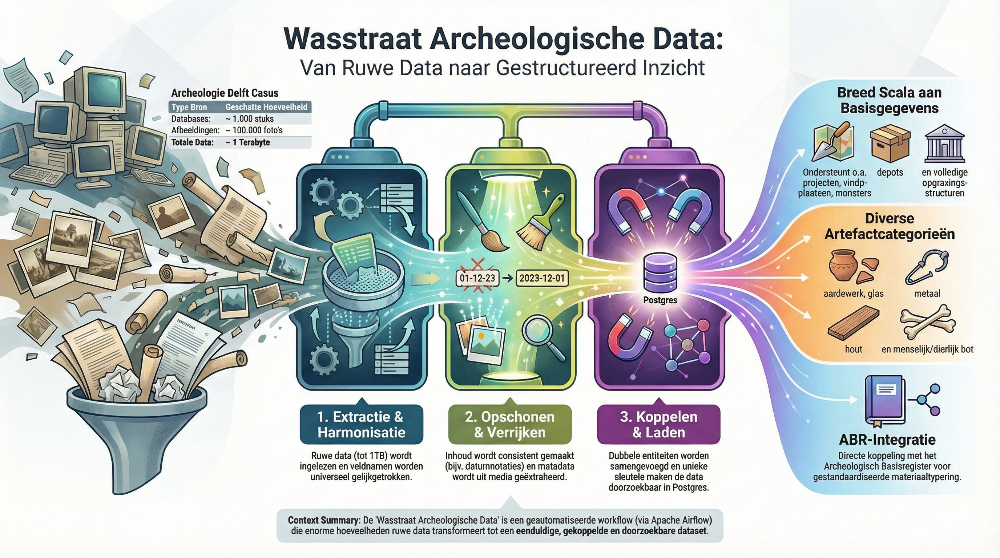

Wasstraat Archeologische Data¶
Welkom bij de documentatie van Wasstraat Archeologische Data — een open-source platform dat archeologische gegevens verzamelt, verwerkt en toegankelijk maakt.

Wat is de Wasstraat?¶
De Wasstraat functioneert als een "digitale wasstraat" voor archeologische data: verspreide bronbestanden zoals Access-databases, Excel-sheets, foto's, rapporten en GIS-bestanden worden geautomatiseerd ingelezen, opgeschoond, gekoppeld en gestructureerd opgeslagen. Het resultaat is een eenduidige, doorzoekbare dataset.
Het project is in 2019 ontstaan voor de gemeente Delft, waar meer dan 1.000 opgravingen met tienduizenden foto's, vondstlijsten en rapporten — in totaal bijna 1 Terabyte aan data — zijn gedigitaliseerd en gestructureerd.
Hoe werkt het?¶
De verwerking verloopt in drie hoofdfasen via Apache Airflow:
| Fase | Stap | Wat gebeurt er? |
|---|---|---|
| 1. Extractie & Harmonisatie | Extract + Harmonize | Ruwe data wordt as-is ingelezen uit 6+ bronnen. Veldnamen worden universeel gelijkgetrokken. |
| 2. Opschonen & Verrijken | Enhance + Set Keys | Inhoud wordt consistent gemaakt (datums, codes, metadata). Unieke sleutels worden gegenereerd. |
| 3. Koppelen & Laden | Merge + Load + Index | Dubbele entiteiten worden samengevoegd. Data wordt geladen in PostgreSQL en geïndexeerd in Elasticsearch. |
Ondersteunde data¶
De Wasstraat verwerkt een breed scala aan archeologische gegevens:
Basisgegevens — Project, Vindplaats, Vondst, Put, Vlak, Spoor, Vulling, Artefact, Monster en Bestand.
Depotgegevens — Stelling, Standplaats, Plaatsing, Doos.
Artefactcategorieën — Aardewerk, Glas, Metaal, Hout, Steen, Leer, Dierlijk Bot, Menselijk Bot, Kleipijp, Bouwaardewerk, Munt, Schelp, Textiel.
Bestanden — Foto's, Tekeningen en Rapporten met automatische metadata-extractie.
Technische Stack¶
| Categorie | Technologieën |
|---|---|
| Orchestratie | Apache Airflow |
| Backend | Python, Flask, Flask-AppBuilder |
| Databases | MongoDB (staging), PostgreSQL (definitief), Elasticsearch (zoeken) |
| Caching | Redis |
| Infrastructuur | Docker Compose, multi-service architectuur |
| Analyse | Jupyter Lab, Pandas |
Nationale Standaarden¶
Het platform is verbonden met de Nederlandse erfgoed-infrastructuur:
- ABR — Archeologisch Basisregister (materiaalclassificatie)
- GGM — Gemeentelijk Gegevensmodel (Common Ground)
- CIDOC CRM — Conceptueel referentiemodel voor cultureel erfgoed
- DANS e-Depot — Nationaal digitaal archief
- Archis — Landelijke archeologische database (RCE)
Aan de slag¶
- Inleiding — Het archeologische datavraagstuk
- Systeemarchitectuur — Hoe het platform is opgebouwd
- Omgevingen & Docker Compose — De Wasstraat opstarten
- Proefdata inlezen — Een eerste dataset verwerken
- Airflow vs. App — Verschil tussen de twee applicaties
Licentie¶
Wasstraat is uitgegeven onder de EUPL-licentie en volledig open-source.
Over dit project
Wasstraat is ontwikkeld door E-Space (Arjen Brienen) in opdracht van de gemeente Delft. Het wordt nu uitgebreid tot een generiek, configureerbaar systeem voor andere Nederlandse gemeenten via het innovatieproject van Stichting Reuvens.